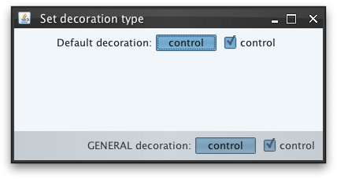
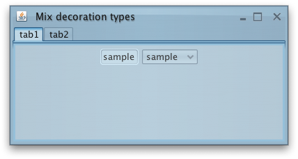

|
import java.awt.BorderLayout;
import java.awt.FlowLayout;
import javax.swing.*;
import org.pushingpixels.substance.api.DecorationAreaType;
import org.pushingpixels.substance.api.SubstanceLookAndFeel;
import org.pushingpixels.substance.api.skin.BusinessBlackSteelSkin;
/**
* Test application that shows the use of the
* {@link SubstanceLookAndFeel#setDecorationType(JComponent, org.pushingpixels.substance.api.DecorationAreaType)}
* API.
*
* @author Kirill Grouchnikov
* @see SubstanceLookAndFeel#setDecorationType(JComponent,
* org.pushingpixels.substance.api.DecorationAreaType)
*/
public class SetDecorationType extends JFrame {
/**
* Creates the main frame for <code>this</code> sample.
*/
public SetDecorationType() {
super("Set decoration type");
this.setLayout(new BorderLayout());
JPanel controls = new JPanel(new FlowLayout(FlowLayout.RIGHT));
SubstanceLookAndFeel.setDecorationType(controls,
DecorationAreaType.GENERAL);
JToggleButton controlButton = new JToggleButton("control");
controlButton.setSelected(true);
JCheckBox controlCheckBox = new JCheckBox("control");
controlCheckBox.setSelected(true);
controls.add(new JLabel("GENERAL decoration:"));
controls.add(controlButton);
controls.add(controlCheckBox);
this.add(controls, BorderLayout.SOUTH);
JPanel content = new JPanel(new FlowLayout());
JToggleButton sampleButton = new JToggleButton("control");
sampleButton.setSelected(true);
JCheckBox sampleCheckBox = new JCheckBox("control");
sampleCheckBox.setSelected(true);
content.add(new JLabel("Default decoration:"));
content.add(sampleButton);
content.add(sampleCheckBox);
this.add(content, BorderLayout.CENTER);
this.setSize(400, 200);
this.setLocationRelativeTo(null);
this.setDefaultCloseOperation(JFrame.EXIT_ON_CLOSE);
}
/**
* The main method for <code>this</code> sample. The arguments are ignored.
*
* @param args
* Ignored.
*/
public static void main(String[] args) {
JFrame.setDefaultLookAndFeelDecorated(true);
JDialog.setDefaultLookAndFeelDecorated(true);
SwingUtilities.invokeLater(new Runnable() {
public void run() {
SubstanceLookAndFeel.setSkin(new BusinessBlackSteelSkin());
new SetDecorationType().setVisible(true);
}
});
}
}
The screenshot below shows application frame with two panels. The bottom panel
has the decoration type set to DecorationAreaType.GENERAL.
Note how the controls in this panel are painted with a different color scheme:

To decide on the decoration area type of the specific component, the runtime
looks at the component itself and all its ancestors. The first occurence of a component
marked with this API defines the decoration area type. Potentially, you can have
a container that is marked with one decoration area type, but one of its children
is marked with another.
Here is a sample test application that marks a tabbed pane
to be DecorationAreaType.HEADER and all
the tabs to be DecorationAreaType.GENERAL.
The visual result is a continuous appearance of the top tab area, with all the tab
controls using slightly different color schemes.
import java.awt.BorderLayout;
import java.awt.FlowLayout;
import javax.swing.*;
import org.pushingpixels.substance.api.DecorationAreaType;
import org.pushingpixels.substance.api.SubstanceLookAndFeel;
import org.pushingpixels.substance.api.skin.BusinessBlueSteelSkin;
/**
* Test application that shows the use of the
* {@link SubstanceLookAndFeel#setDecorationType(JComponent, DecorationAreaType)}
* API called on different components.
*
* @author Kirill Grouchnikov
* @see SubstanceLookAndFeel#setDecorationType(JComponent, DecorationAreaType)
*/
public class SetDecorationTypeMix extends JFrame {
/**
* Creates the main frame for <code>this</code> sample.
*/
public SetDecorationTypeMix() {
super("Mix decoration types");
this.setLayout(new BorderLayout());
JTabbedPane tabs = new JTabbedPane();
SubstanceLookAndFeel.setDecorationType(tabs, DecorationAreaType.HEADER);
JPanel tab1 = new JPanel(new FlowLayout());
tab1.add(new JTextField("sample"));
tab1.add(new JComboBox(new Object[] { "sample" }));
SubstanceLookAndFeel
.setDecorationType(tab1, DecorationAreaType.GENERAL);
JPanel tab2 = new JPanel(new FlowLayout());
tab2.add(new JTextField("sample2"));
tab2.add(new JComboBox(new Object[] { "sample2" }));
SubstanceLookAndFeel
.setDecorationType(tab2, DecorationAreaType.GENERAL);
tabs.addTab("tab1", tab1);
tabs.addTab("tab2", tab2);
this.add(tabs, BorderLayout.CENTER);
this.setSize(400, 200);
this.setLocationRelativeTo(null);
this.setDefaultCloseOperation(JFrame.EXIT_ON_CLOSE);
}
/**
* The main method for <code>this</code> sample. The arguments are ignored.
*
* @param args
* Ignored.
*/
public static void main(String[] args) {
JFrame.setDefaultLookAndFeelDecorated(true);
JDialog.setDefaultLookAndFeelDecorated(true);
SwingUtilities.invokeLater(new Runnable() {
public void run() {
SubstanceLookAndFeel.setSkin(new BusinessBlueSteelSkin());
UIManager.put("TabbedPane.contentOpaque", Boolean.TRUE);
new SetDecorationTypeMix().setVisible(true);
}
});
}
}
The screenshot below shows this frame. Note the visual appearance of the tab
area and the controls in the selected tab:

|